作者: Ji You Email: jumail@qq.com
第2章 操作虚拟机
云计算的基础便是虚拟机，IaaS的操作与管理对象也是虚拟机。因此，掌握基本的虚拟机操作方法有利于理解云计算的基本概念。
利用操作虚拟机的方法，可以很容易地虚拟出多个网络环境，也可以很容易地虚拟出多个硬盘以供存储实验，进而可以很容易地在虚拟机环境中搭建OpenStack。
2.1 虚拟网络
在创建任何虚拟机前，需要查看是否有可用的网络设备以供使用。通过virt-manager或者libvirt可以创建出各种各样的网络设备。
本着实用的原则，在这里并不去介绍所有的这些网络的创建方式。只介绍在本书中构建OpenStack所需的虚拟网格的创建方式。如果对于virt-manager/libvirt所支持的其他网络感兴趣，可以参考以下链接：
- http://wiki.libvirt.org/page/VirtualNetworking
- https://help.ubuntu.com/community/KVM/Networking
2.1.1 准备工作
开始准备动手之前，请务必已将virt-manager，libvirt，kvm等软件参照第一章安装好。
首先请运行如下命令，罗列所有的虚拟机：
virsh list --all
如下没有创建虚拟机，那么输出结果如下：
[root@centos tmp]# virsh list --all
Id Name State
----------------------------------------------------
其次，运行虚拟网络命令，罗列所有的虚拟网络：
virsh net-list --all
如果并没有创建虚拟网络，那么输出结果如下：
Name State Autostart Persistent
--------------------------------------------------
注意 有时候，安装好libvirt和virt-manager之后，会有如下输出：
Name State Autostart Persistent
--------------------------------------------------
default active yes yes
输出含义：
- active 表示此网络已被激活。
- Autostart = yes 表明系统启动时，此网络将会被激活。
- Persistent = yes 表明此网络将会一直存在。除非手动删除。
这表明libvirt在安装时，已经创建好了一个默认的虚拟网络virbr0，可以通过如下命令查看此网络的信息：
virsh net-dumpxml default
将会得到如下输出：
<network>
<name>default</name>
<uuid>e02bc7b6-651f-432e-bbf6-0e9bc2ceef06</uuid>
<forward mode='nat'/>
<bridge name='virbr0' stp='on' delay='0' />
<mac address='52:54:00:8A:2F:87'/>
<ip address='192.168.122.1' netmask='255.255.255.0'>
<dhcp>
<range start='192.168.122.2' end='192.168.122.254' />
</dhcp>
</ip>
</network>
如果发现此输出信息，也可以通过Linux系统的ifconfg命令查看其信息：
ifconfig virbr0
将会得到如下输出：
virbr0 Link encap:Ethernet HWaddr 52:54:00:8A:2F:87
inet addr:192.168.122.1 Bcast:192.168.122.255 Mask:255.255.255.0
UP BROADCAST RUNNING MULTICAST MTU:1500 Metric:1
RX packets:0 errors:0 dropped:0 overruns:0 frame:0
TX packets:0 errors:0 dropped:0 overruns:0 carrier:0
collisions:0 txqueuelen:0
RX bytes:0 (0.0 b) TX bytes:0 (0.0 b)
可是，如果没有virbr0网络设备应该怎么办呢？不要着急，下面将会介绍如何创建此网络设备。
2.2 创建virbr0
如果利用virsh net-list --all命令并没有发现virbr0设备，那么可以采用如下方法创建。如果已经有此设备，并且处于激活状态，那么也可以跳过此小节。
2.2.1 定义网络
首先需要编写virbr0.xml文件，文件内容如下：
<network>
<name>virbr0</name>
<uuid>%UUID0%</uuid>
<forward mode='nat'/>
<bridge name='virbr0' stp='on' delay='0' />
<ip address='192.168.122.1' netmask='255.255.255.0'>
<dhcp>
<range start='192.168.122.2' end='192.168.122.254' />
</dhcp>
</ip>
</network>
xml文件中变量%UUID0%需要根据环境进行自动替换，替换方法有两种，选择自己喜欢的即可。
注意默认情况下virbr0是192.168.122.0/24网段，后文中也将会用到此网段，请不要修改此网络信息。实际上，只需要修改%UUID0%字段即可。
方法1 手动替换
运行命令：
uuidgen
会得到如下输出：
1b4d57a0-4719-4af0-ba49-c38e01b78575
由于环境不同，此字符串并不相同，但是格式类似，复制此输出，替换掉virbr0.xml中的%UUID0%字符串。
方法2 自动替换
运行命令：
uuid=`uuidgen`
sed -i "s,%UUID0%,$uuid,g" virbr0.xml
替换virbr0.xml完成之后，将此网络添加至libvirt。
virsh net-define virbr0.xml
注意每个网络的UUID必须不同，因此，每次替换都必须重新生成字符串。
2.2.2 激活网络
定义网络完成之后，需要激活此网络，否则不能正常使用。激活命令如下：
virsh net-start virbr0
virsh net-autostart virbr0
2.2.3 查看网络
激活之后，可以通过如下命令查看网络信息：
virsh net-list --all
virsh net-dumpxml virbr0
如果发现virbr0不存在，而是有一个default网络，也可以查看此default网络的信息：
virsh net-dumpxml default
也可以通过ifconfig virbr0查看网络设备的信息。
2.2.4 虚拟网络IP
虚拟机网络创建好之后，默认情况下，会将网段的第一个IP地址给予物理机。因此，ifconfig virbr0可以查看到本机IP地址为192.168.122.1。
virbr0 Link encap:Ethernet HWaddr 52:54:00:8A:2F:87
inet addr:192.168.122.1 Bcast:192.168.122.255 Mask:255.255.255.0
UP BROADCAST RUNNING MULTICAST MTU:1500 Metric:1
RX packets:0 errors:0 dropped:0 overruns:0 frame:0
TX packets:0 errors:0 dropped:0 overruns:0 carrier:0
collisions:0 txqueuelen:0
RX bytes:0 (0.0 b) TX bytes:0 (0.0 b)
2.3 创建virbr1至virbr4
为了有足够的虚拟网络供虚拟机使用，另外还需要创建virbr1至virbr4虚拟网络。后续的网络信息，只需要信息相应的UUID即可，请不要修改其他网络信息。
2.3.1 virbr1
step 1
创建virbr1.xml文件，内容如下：
<network>
<name>virbr1</name>
<uuid>%UUID1%</uuid>
<forward mode='nat'/>
<bridge name='virbr1' stp='on' delay='0' />
<ip address='192.168.123.1' netmask='255.255.255.0'>
<dhcp>
<range start='192.168.123.2' end='192.168.123.254' />
</dhcp>
</ip>
</network>
step 2
运行命令：
uuid=`uuidgen`
sed -i "s,%UUID1%,$uuid,g" virbr1.xml
virsh net-define virbr1.xml
virsh net-start virbr1
virsh net-autostart virbr1
step 3
查看是否成功创建：
virsh net-list --all
2.3.2 virbr2
step 1
创建virbr2.xml文件，文件内容如下：
<network>
<name>virbr2</name>
<uuid>%UUID2%</uuid>
<forward mode='nat'/>
<bridge name='virbr2' stp='on' delay='0' />
<ip address='192.168.124.1' netmask='255.255.255.0'>
<dhcp>
<range start='192.168.124.2' end='192.168.124.254' />
</dhcp>
</ip>
</network>
step 2
运行如下命令，定义虚拟机网络：
uuid=`uuidgen`
sed -i "s,%UUID2%,$uuid,g" virbr2.xml
virsh net-define virbr2.xml
virsh net-start virbr2
virsh net-autostart virbr2
step 3
查看是否成功创建virbr2虚拟网络：
virsh net-list --all
2.3.3 virbr3
step 1
创建virbr3.xml文件，文件内容如下：
<network>
<name>virbr3</name>
<uuid>%UUID3%</uuid>
<forward mode='nat'/>
<bridge name='virbr3' stp='on' delay='0' />
<ip address='192.168.125.1' netmask='255.255.255.0'>
<dhcp>
<range start='192.168.125.2' end='192.168.125.254' />
</dhcp>
</ip>
</network>
step 2
运行如下命令，定义虚拟机网络：
uuid=`uuidgen`
sed -i "s,%UUID3%,$uuid,g" virbr3.xml
virsh net-define virbr3.xml
virsh net-start virbr3
virsh net-autostart virbr3
step 3
查看是否成功创建virbr3虚拟网络：
virsh net-list --all
2.3.4 virbr4
创建virbr4.xml文件，文件内容如下：
<network>
<name>virbr4</name>
<uuid>%UUID4%</uuid>
<forward mode='nat'/>
<bridge name='virbr4' stp='on' delay='0' />
<ip address='192.168.126.1' netmask='255.255.255.0'>
<dhcp>
<range start='192.168.126.2' end='192.168.126.254' />
</dhcp>
</ip>
</network>
step 2
运行如下命令，定义虚拟机网络：
uuid=`uuidgen`
sed -i "s,%UUID4%,$uuid,g" virbr4.xml
virsh net-define virbr4.xml
virsh net-start virbr4
virsh net-autostart virbr4
step 3
查看是否成功创建virbr4虚拟网络：
virsh net-list --all
2.3.5 检查
创建成功之后，运行命令：
virsh net-list --all
将会得到如下输出：
注意default即virbr0。
virsh net-list
Name State Autostart Persistent
--------------------------------------------------
default active yes yes
virbr1 active yes yes
virbr2 active yes yes
virbr3 active yes yes
virbr4 active yes yes
也可以运行ifconfig查看到网络信息：
virbr0 Link encap:Ethernet HWaddr 52:54:00:8A:2F:87
inet addr:192.168.122.1 Bcast:192.168.122.255 Mask:255.255.255.0
UP BROADCAST RUNNING MULTICAST MTU:1500 Metric:1
RX packets:0 errors:0 dropped:0 overruns:0 frame:0
TX packets:0 errors:0 dropped:0 overruns:0 carrier:0
collisions:0 txqueuelen:0
RX bytes:0 (0.0 b) TX bytes:0 (0.0 b)
virbr1 Link encap:Ethernet HWaddr 52:54:00:B8:E2:9E
inet addr:192.168.123.1 Bcast:192.168.123.255 Mask:255.255.255.0
UP BROADCAST RUNNING MULTICAST MTU:1500 Metric:1
RX packets:0 errors:0 dropped:0 overruns:0 frame:0
TX packets:0 errors:0 dropped:0 overruns:0 carrier:0
collisions:0 txqueuelen:0
RX bytes:0 (0.0 b) TX bytes:0 (0.0 b)
virbr2 Link encap:Ethernet HWaddr 52:54:00:01:22:8A
inet addr:192.168.124.1 Bcast:192.168.124.255 Mask:255.255.255.0
UP BROADCAST RUNNING MULTICAST MTU:1500 Metric:1
RX packets:0 errors:0 dropped:0 overruns:0 frame:0
TX packets:0 errors:0 dropped:0 overruns:0 carrier:0
collisions:0 txqueuelen:0
RX bytes:0 (0.0 b) TX bytes:0 (0.0 b)
virbr3 Link encap:Ethernet HWaddr 52:54:00:D8:AC:D0
inet addr:192.168.125.1 Bcast:192.168.125.255 Mask:255.255.255.0
UP BROADCAST RUNNING MULTICAST MTU:1500 Metric:1
RX packets:0 errors:0 dropped:0 overruns:0 frame:0
TX packets:0 errors:0 dropped:0 overruns:0 carrier:0
collisions:0 txqueuelen:0
RX bytes:0 (0.0 b) TX bytes:0 (0.0 b)
virbr4 Link encap:Ethernet HWaddr 52:54:00:BD:77:C7
inet addr:192.168.126.1 Bcast:192.168.126.255 Mask:255.255.255.0
UP BROADCAST RUNNING MULTICAST MTU:1500 Metric:1
RX packets:0 errors:0 dropped:0 overruns:0 frame:0
TX packets:0 errors:0 dropped:0 overruns:0 carrier:0
collisions:0 txqueuelen:0
RX bytes:0 (0.0 b) TX bytes:0 (0.0 b)
至此，虚拟网络已经创建成功。所有的这些网络信息，也可以在(https://github.com/JiYou/virtual-machine)找到。
2.4 使用虚拟网络
虚拟网络已经成功创建了，可是怎么使用呢？不要着急，首先创建好一台CentOS 6.5 Desktop的虚拟机。创建方法参考《附录二 virt-manager》。
虚拟机创建成功之后，使用命令virsh list --all可以看到此虚拟机：
Id Name State
----------------------------------
- centos-6.5-desktop shut off
如果虚拟机处于运行状态，请登陆至虚拟机，将其关闭。
2.4.1 添加虚拟网卡virbr0
step 1
至物理机，打开virt-manager，选中目标虚拟机，如图2.1所示：
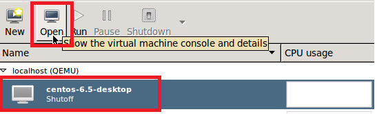
图2.1 选中虚拟机，点击Open按钮。
step 2
查看详细信息，点击Details按钮，如图2.2所示：
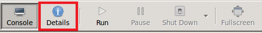
图2.2 点击Details按钮
step 3
为了添点虚拟网络，点击Add Hardware按钮，如图2.3所示：
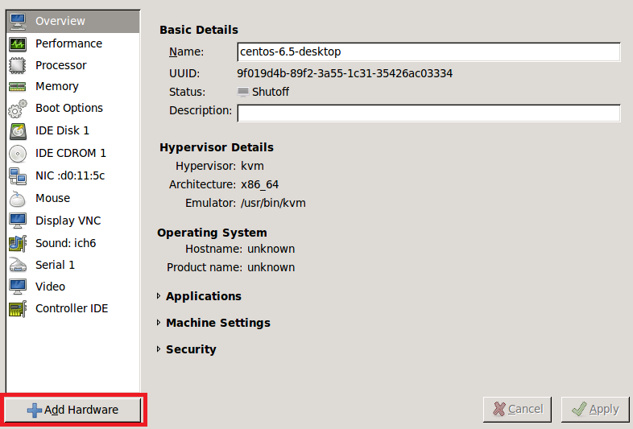
图2.3 点击Add Hardware按钮。
step 4
选中网卡设备，再选择default，点击Finish按钮，添加virbr0设备，如图2.4所示：
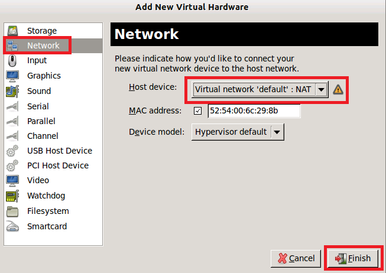
图2.4 添加virbr0设备
添加成功之后，将会显示如图2.5所示信息：
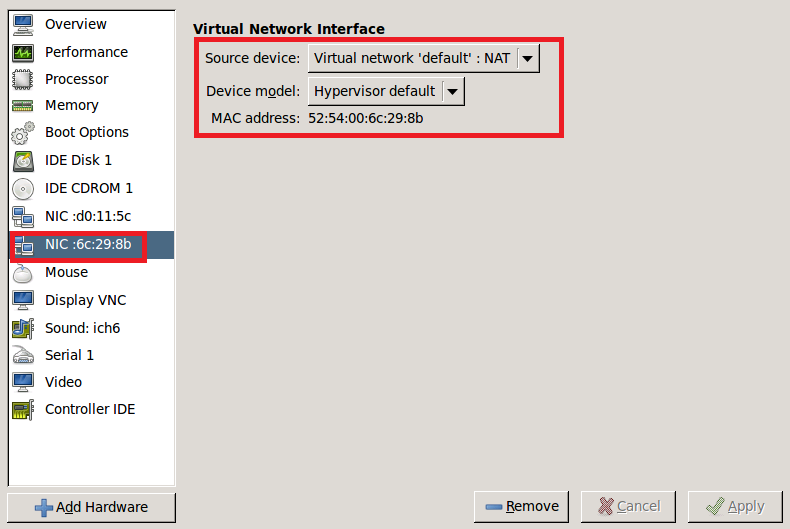
图2.5 检查添加的virbr0设备。
2.4.2 添加虚拟网络virbr1至virbr4
选中网卡设备，在添加时，选择virbr1，如图2.6所示：
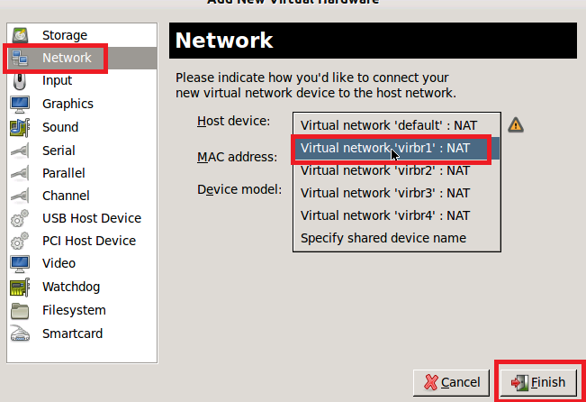
图2.6 添加virbr1虚拟网络。
重复此步骤，依次添加virbr2, virbr3, virbr4虚拟网络。操作成功之后，依次查看每个网卡的信息，确保添的网络是virbr0~virbr4。正确的顺序及网卡对虚拟机之间通信至关重要，请务必认真对待。
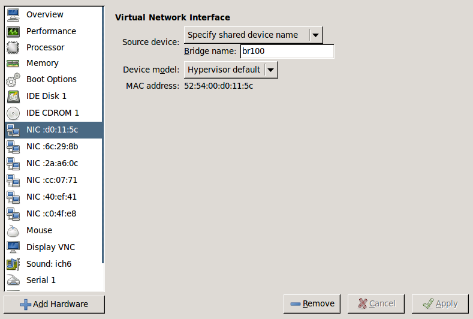
图2.7 检查添加的虚拟网络
注意 如果添加错误，选中此网卡，修改其所属网络即可。
2.5 添加虚拟磁盘
2.5.1 添加新建磁盘
除虚拟网络之外，还可以为虚拟机添加额外的磁盘。操作步骤与添加虚拟网络类似，只不过资源类型选择Storage。操作如图2.8所示：
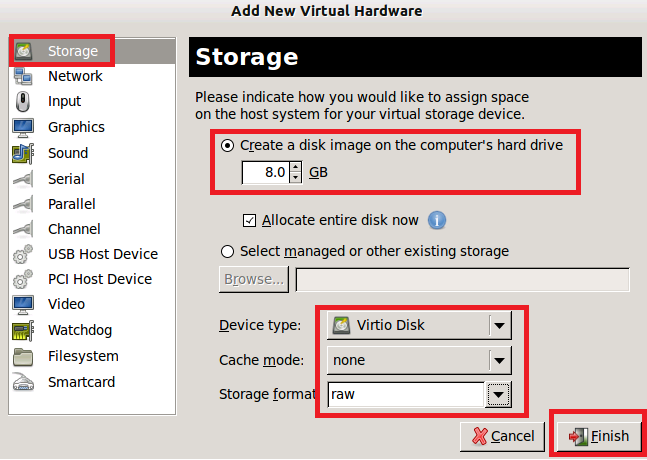
图2.8 添加磁盘
注意在添加磁盘时，按照需要调整大小。其他选项请参考图2.8，如果对选项不太了解，可以查阅libvirt相关文档。
2.5.2 添加已有磁盘
上面介绍的方法，是新建一个磁盘，并且挂载至虚拟机，那么，有没有什么办法可以添加一个已经存在的磁盘呢？方法如下：
step 1
如果已经有一个磁盘，那么此步骤可以跳过。否则可以手动创建：
qemu-img create -f raw /cloud/for-cinder.raw 10G
运行此命令，将会在/cloud/目录下新建一个for-cinder.raw磁盘，大小为10G。请将此处磁盘路径根据真实环境进行更改。
step 2
添加磁盘，方法如图2.9所示：
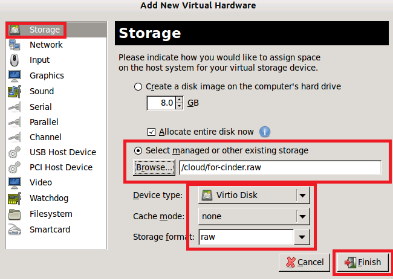
图2.9 添加已经磁盘。
注意大部分系统都支持virio磁盘驱动，如果不支持，请选择IDE Disk选项。
step 3
检查添加结果，如图2.10所示：
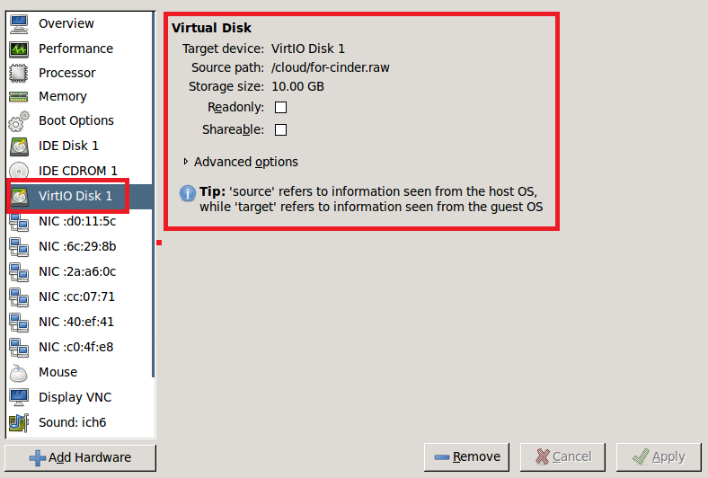
图2.10 检查添加磁盘
2.6 启动虚拟机
2.6.1 查看虚拟机
至此，已经将虚拟网络与虚拟磁盘都添加至虚拟机，那么现在请启动虚拟机。如图2.11所示：
图2.11 点击run按钮运行虚拟机。
再点击Console按钮，就可以看到虚拟机的运行界面了。
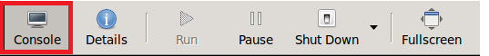
图2.12 点击Console，查看虚拟机运行状态。
2.6.2 查看虚拟资源
虚拟网卡
通过ifconfig可以看到所有添加的虚拟网卡，信息罗列如下：
eth0 Link encap:Ethernet HWaddr 52:54:00:6C:29:8B
inet addr:192.168.122.239 Bcast:192.168.122.255 Mask:255.255.255.0
inet6 addr: fe80::5054:ff:fe6c:298b/64 Scope:Link
UP BROADCAST RUNNING MULTICAST MTU:1500 Metric:1
RX packets:13 errors:0 dropped:0 overruns:0 frame:0
TX packets:8 errors:0 dropped:0 overruns:0 carrier:0
collisions:0 txqueuelen:1000
RX bytes:1216 (1.1 KiB) TX bytes:1152 (1.1 KiB)
Interrupt:10 Base address:0x6000
eth1 Link encap:Ethernet HWaddr 52:54:00:2A:A6:0C
inet addr:192.168.123.199 Bcast:192.168.123.255 Mask:255.255.255.0
inet6 addr: fe80::5054:ff:fe2a:a60c/64 Scope:Link
UP BROADCAST RUNNING MULTICAST MTU:1500 Metric:1
RX packets:11 errors:0 dropped:0 overruns:0 frame:0
TX packets:9 errors:0 dropped:0 overruns:0 carrier:0
collisions:0 txqueuelen:1000
RX bytes:1124 (1.0 KiB) TX bytes:1194 (1.1 KiB)
Interrupt:11 Base address:0x8000
eth2 Link encap:Ethernet HWaddr 52:54:00:CC:07:71
inet addr:192.168.124.93 Bcast:192.168.124.255 Mask:255.255.255.0
inet6 addr: fe80::5054:ff:fecc:771/64 Scope:Link
UP BROADCAST RUNNING MULTICAST MTU:1500 Metric:1
RX packets:11 errors:0 dropped:0 overruns:0 frame:0
TX packets:9 errors:0 dropped:0 overruns:0 carrier:0
collisions:0 txqueuelen:1000
RX bytes:1124 (1.0 KiB) TX bytes:1194 (1.1 KiB)
Interrupt:11 Base address:0xa000
eth3 Link encap:Ethernet HWaddr 52:54:00:40:EF:41
inet addr:192.168.125.103 Bcast:192.168.125.255 Mask:255.255.255.0
inet6 addr: fe80::5054:ff:fe40:ef41/64 Scope:Link
UP BROADCAST RUNNING MULTICAST MTU:1500 Metric:1
RX packets:16 errors:0 dropped:0 overruns:0 frame:0
TX packets:8 errors:0 dropped:0 overruns:0 carrier:0
collisions:0 txqueuelen:1000
RX bytes:1477 (1.4 KiB) TX bytes:1152 (1.1 KiB)
Interrupt:10 Base address:0xc000
eth4 Link encap:Ethernet HWaddr 52:54:00:C0:4F:E8
inet addr:192.168.126.176 Bcast:192.168.126.255 Mask:255.255.255.0
inet6 addr: fe80::5054:ff:fec0:4fe8/64 Scope:Link
UP BROADCAST RUNNING MULTICAST MTU:1500 Metric:1
RX packets:13 errors:0 dropped:0 overruns:0 frame:0
TX packets:8 errors:0 dropped:0 overruns:0 carrier:0
collisions:0 txqueuelen:1000
RX bytes:1216 (1.1 KiB) TX bytes:1152 (1.1 KiB)
Interrupt:10 Base address:0xe000
请记录下eth0的IP地址192.168.122.239，后面将会用到。具体环境有所不同，此处仅供参考。
2.6.3 虚拟磁盘
在虚拟机中，打开Terminal，切换至root用户，运行如下命令：
fdisk -l
可以看到如下信息：
Disk /dev/vda: 10.7 GB, 10737418240 bytes
16 heads, 63 sectors/track, 20805 cylinders
Units = cylinders of 1008 * 512 = 516096 bytes
Sector size (logical/physical): 512 bytes / 512 bytes
I/O size (minimum/optimal): 512 bytes / 512 bytes
Disk identifier: 0x00000000
通过mount命令，发现此磁盘未被挂载，信息如下：
/dev/mapper/vg_centos-lv_root on / type ext4 (rw)
proc on /proc type proc (rw)
sysfs on /sys type sysfs (rw)
devpts on /dev/pts type devpts (rw,gid=5,mode=620)
tmpfs on /dev/shm type tmpfs (rw,rootcontext="system_u:object_r:tmpfs_t:s0")
/dev/sda1 on /boot type ext4 (rw)
none on /proc/sys/fs/binfmt_misc type binfmt_misc (rw)
因此，可以判断此磁盘就是新添加的虚拟磁盘了。接下来，就可以采用Linux挂载磁盘的方式来进行挂载了。如果不了解，请百度哦，此处不在多述。
2.7 连接虚拟机
如果需要连接虚拟机，那么有两种方式，一种是SSH，一种是VNC。这两种连接方式在Linux与Windows环境各不相同，分别介绍如下：
2.7.1 SSH
linux系统
假设你有另外一台物理机，并且希望连接至这台虚拟机，方式如下：
ssh username@physical_host_ip
ssh root@192.168.122.239
注意username与physicalhostip需要根据具体环境来设置。192.168.122.239即为前面记录下的虚拟机eth0的IP地址。
Windows系统
安装好putty或者xshell，使用username连接至物理机physicalhostip。不熟悉putty或者xshell用法者，请务必查阅相文档（百度就够用啦）。
登陆至物理机之后，运行命令：
ssh root@192.168.122.239
输入相应密码，即可连接至虚拟机。
2.7.2 VNC
linux系统
首先安装vncviewer客户端工具。比如两台Linux机器，A节点想连接至B节点，查看B节点的虚拟机桌面，那么应该在A节点安装客户端工具，当然，简单粗暴的办法是这些Linux节点都安装上。
yum install tightvnc
注意网络上很多文章介绍的VNC安装方法，都是针对物理机环境的桌面而言，安装了vnc服务的服务器端。在本文中，只是为了查看虚拟机的桌面，却不需要安装任何VNC服务的服务端，只需要安装VNC的客户端工具tightvnc即可。这又是什么原因呢？
这是因为，virt-manager/libvirt创建好虚拟机之后，会在物理机上自动创建一个端口，提供VNC服务。因此，不需要安装VNC服务端了。那么，这个端口是多少呢？查看方法，登陆至虚拟机所在物理机，运行：
virsh list
将会罗列出所有运行中的虚拟机，输出如下：
virsh list --all
Id Name State
----------------------------------
27 centos-6.5-desktop running
查看虚拟机VNC服务在物理机的端口，保需要运行如下命令：
virsh vncdisplay centos-6.5-desktop
:2
输出值，加上5900，即是VNC服务真正所在端口。可以通过lsof命令查看端口信息：
lsof -i :5902
COMMAND PID USER FD TYPE DEVICE SIZE/OFF NODE NAME
kvm 10186 libvirt-qemu 13u IPv4 35273744 0t0 TCP *:5902 (LISTEN)
kvm 10186 libvirt-qemu 16u IPv4 35273801 0t0 TCP jiyou-os.sh.intel.com:5902->jinmanli-mobl.ccr.corp.intel.com:45638 (ESTABLISHED)
可以看到libvirt-qemu已经将centos-6.5-desktop虚拟机的桌面放在这个端口上了。接下来，只需要在Linux机器上，运行如下命令：
vncviewer physical_node_ip:2
physicalnodeip即是虚拟机所在物理机的IP，端口即是virsh vncdisplay的输出结果。实际上，运行：
vncviewer physical_node_ip:5902
也是一样的效果，不过为了简单，一般只需要写添加的端口值2。
注意运行vncviewer命令需要Desktop环境支持。因此，请务必登陆至物理机，开启其桌面后，在终端中运行。
Windows系统
Windows系统下只需要安装Tight VNC Viewer即可。在查看时，键入physicalnodeip:2即可以查看虚拟机桌面：
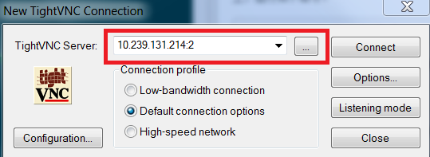
图2.13 利用Tight VNC Viewer连接至虚拟机。
注意Windows上，只需要安装Tight VNC Viewer即可。其他VNC客户端工具不如此工具简单好用。
连接之后，出现界面如下：
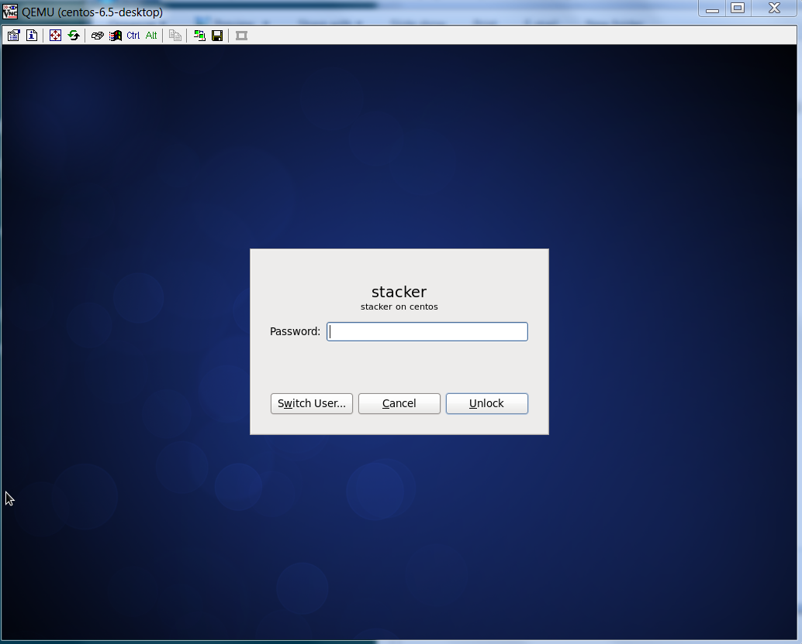
图2.14 利用VNC访问虚拟机桌面。
2.8 快速创建虚拟机
如果每次安装，都参照《附录二 virt-manager》，那么安装多个虚拟机将会变得不可忍受，重复性的操作及安装操作系统让人变得烦不胜烦。那么，有没有什么简单易性的方法呢？当然有啦，而且非常简单。
2.8.1 创建模板
所谓一生二，二生三，生成万物。那么首先需要创建这个一。此处，谓之模板。创建方法请参考《附录二 virt-manager》。在这里，所创建的虚拟机名称为centos-6.5-desktop。
创建完成之后，虚拟机成功配置并且进行入桌面之后，关闭此虚拟机。在virt-manager中查看此虚拟机的信息，如图2.14所示：

图2.15 查看虚拟磁盘所在路径。
注意创建虚拟机，并且成功进入桌面之后，请务必关闭虚拟机，否则后续操作会出错。
2.8.2 保存模板
接下需要保存此模板，登陆至虚拟机所在物理机，运行如下命令，并磁盘模板保存至/cloud/_base目录下：
mkdir -p /cloud/_base
cd /cloud/
mv /var/lib/libvirt/images/centos-6.5-desktop.img /cloud/_base
检查模板： qemu-img info /cloud/_base/centos-6.5-desktop.img
输出信息如下： image: /cloud/_base/centos-6.5-desktop.img file format: raw virtual size: 8.0G (8589934592 bytes) disk size: 8.0G
注意此模板磁盘不能再被其他虚拟机直接使用，也不能被其他程序写入。此磁盘应该只供读操作进行。任何写操作会导致后续操作失败。请务必参照文章后续步骤。
注意模板磁盘格式尽量使用raw格式即（file format: raw），多数系统对raw格式磁盘作模板支持非常好。其他格式
容易出现问题。
2.8.3 取消直接引用
由于模板磁盘不能被任何虚拟机直接引用，因此，在进行后续操作之前，应该先关闭引用此磁盘的虚拟机。如果无法关闭虚拟机，请直接执行：
virsh destroy centos-6.5-desktop
接着执行如下命令：
virsh undefine centos-6.5-desktop
将centos-6.5-desktop更换为所创建的虚拟机的名字。
注意此处无论如何，需要将创建模板的虚拟机关闭，否则后续操作会失败。
2.8.4 创建影子磁盘
接下将会利用qemu-img提供的影子磁盘功能，运行如下命令，创建影子磁盘：
mkdir -p /cloud/shadow-test/
qemu-img create -f qcow2 -o cluster_size=2M,backing_file=/cloud/_base/centos-6.5-desktop.img /cloud/shadow-test/shadow-test.qcow2 60G
注意backing_file运行此命令，请输入文件的全路径，否则会出错（可能会导致虚拟机无法正常启动）。其他参数亦不需要修改。最后一个参数60G，请根据模板文件大小，一般而言3+倍以上不会现问题，比如模板文件disk size: 20.0G，那么此参数应该至少60G以上。
注意模板文件，此处称之为backing_file。
2.8.5 创建新的虚拟机
物理机上打开virt-manager，点击New按钮，照图2.16操作：
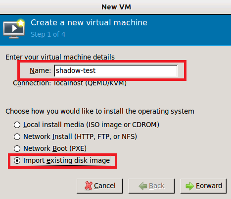
图2.16 新建虚拟机
接着输入影子磁盘所在绝对路径，点击Forward按钮：
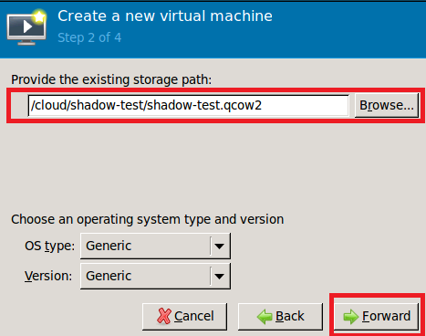
图2.17 选中已有磁盘
接下来设置CPU数目及内存大小：
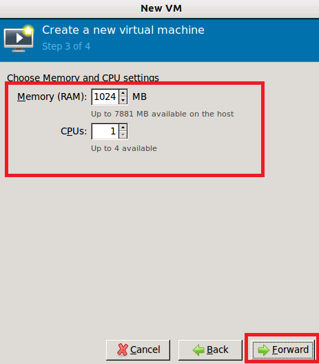
图2.18 设置CPU及内存
接下来选择网络，这里直接采用默认配置，如果需要添加更多网卡，可以采用前面介绍的方法来添加。此处请勾选Customize configuration before install。
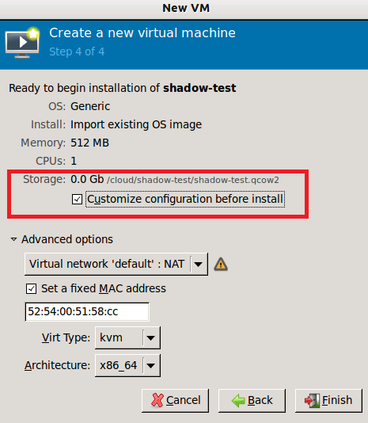
图2.19 选择网络再点击Finish按钮。
接着再对磁盘属性进行配置，否则虚拟机启动后找不到可启动设备，按图2.20操作。
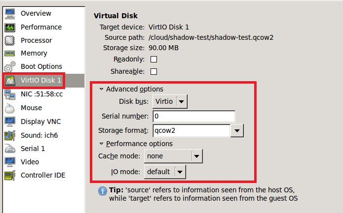
图2.20 配置虚拟机的磁盘属性
接着再点击，Apply再点击Begin installtion。如果出错，请先忽略，点击Console，查看是否已经启动。如果已经启动，请关闭virt-manager。
2.9 小结
本文中介绍了如何连接至虚拟机，阅读本文之后，请回答如下问题：
- 利用SSH连接虚拟机时，为什么一定要先连接至物理机？
- 如果在虚拟机中安装tightvnc后，在终端中运行命令
vncviwer 192.168.122.1:2出现的桌面是什么？ - 本文中的虚拟机VNC端口为2，那么你的环境上，虚拟机VNC端口又是多少呢？当虚拟机数目上升之后，会有什么变化？